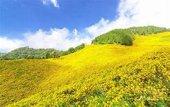

- The Walk
- Transport
- History
- Gallery
The Walk
The walk from Monterosso to Riomaggiore will take you approximately two hours, give or take an hour depending on the weather conditioms and your physical shape.

What?
Cinque Terre comprises five villages: Monterosso, Vernazza, Corniglia, Manarola, and Riomaggiore.
Where?
On teh northwest cost of the Italian Riviera, north of the city La Spezia
Price?